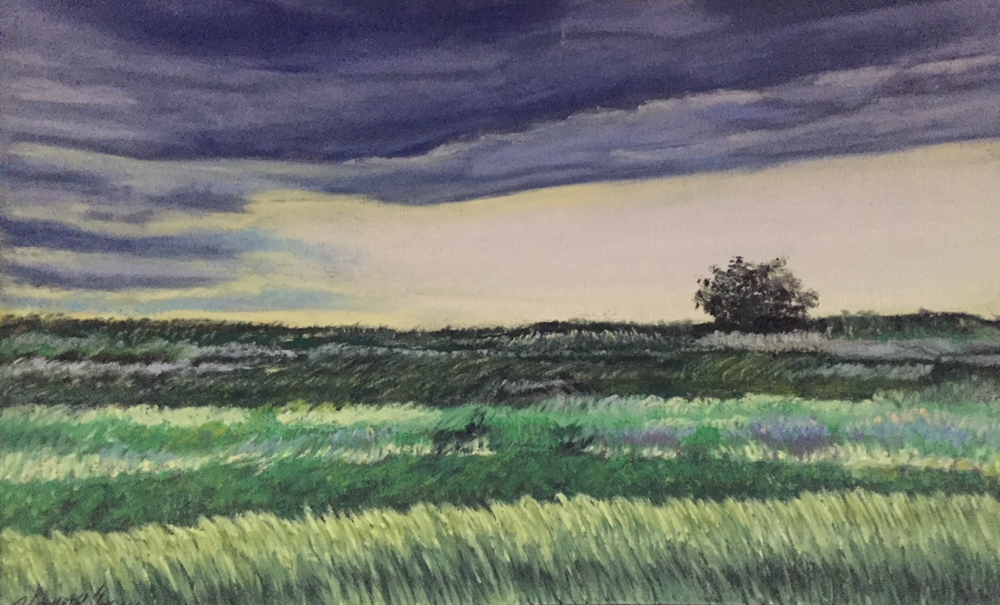

Prairie

About
Medium: Chalk Pastels on Sandpaper
Genre: Live Painting
Size: 4in x 6in
Description
This is a simple sketch painting done in pastels of a prairie that used to be where I lived. Pastels is my favorite medium to work in the fine arts, and I especially love my little painting. This took me an hour to complete and I used sandpaper because it holds the pastels better that ordinary paper.